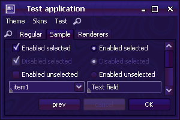
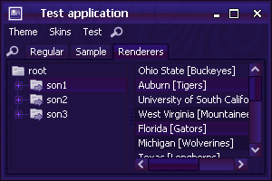
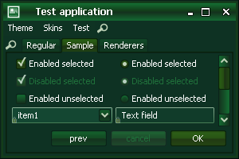
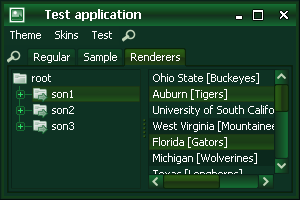
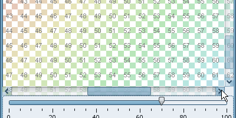
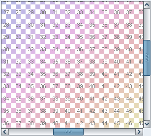
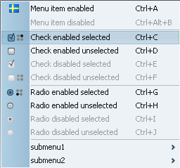
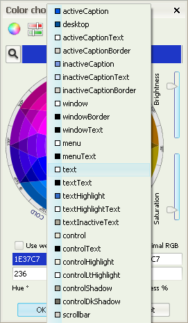
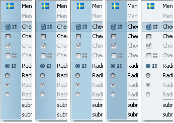

New dark skins
Two new skins added to the org.jvnet.substance.skin
package.
Challenger Deep available in the
org.jvnet.substance.skin.ChallengerDeepSkin.
In addition, the
org.jvnet.substance.skin.SubstanceChallengerDeepLookAndFeel
can be used with one of the following options:
-Dswing.defaultlaf=org.jvnet.substance.skin.SubstanceChallengerDeepLookAndFeelUIManager.setLookAndFeel(new SubstanceChallengerDeepLookAndFeel())UIManager.setLookAndFeel("org.jvnet.substance.skin.SubstanceChallengerDeepLookAndFeel");
 
Emerald Dusk available in the
org.jvnet.substance.skin.EmeraldDuskSkin.
In addition, the
org.jvnet.substance.skin.SubstanceEmeraldDuskLookAndFeel
can be used with one of the following options:
-Dswing.defaultlaf=org.jvnet.substance.skin.SubstanceEmeraldDuskLookAndFeelUIManager.setLookAndFeel(new SubstanceEmeraldDuskLookAndFeel())UIManager.setLookAndFeel("org.jvnet.substance.skin.SubstanceEmeraldDuskLookAndFeel");
 
New SubstanceDefaultLookAndFeel
The org.jvnet.substance.SubstanceDefaultLookAndFeel
allows applications to restore the default settings of Substance (taken from VM parameters
or configuration file). This allows switching between custom skins
and the default settings.
Overlay effects on scroll bars
The new SubstanceLookAndFeel.OVERLAY_PROPERTY client
property (currently supported only on scroll panes) specifies that a component should have overlay
functionality. In case of scroll pane marked with this property set to
Boolean.TRUE, the contents of the viewport are painted
"beneath" the scroll bar area (scroll tumb, scroll track and scroll buttons). This property works
together with the BACKGROUND_COMPOSITE property
that specifies the Composite for active and inactive state
of the control.
The screenshots below show enabled, non-flat, active and overlayed scroll bars with 40% inactive and 70% active opacity on scroll bars. The first screenshot shows the mouse on the viewport (scrollbar is non-active):

The second screenshot shows the mouse on the track. The track and the thumb are painted in active opacity (compare with the vertical track and thumb):

The third screenshot shows the mouse on the left scroll button. The button, the track and the thumb are painted in active opacity (compare with the right button):

The fourth screenshot shows the mouse on the right scroll button. The button, the track and the thumb are painted in active opacity (compare with the left button):

Grip handles on scroll bars
The new SubstanceLookAndFeel.SCROLLBAR_GRIP_PAINTER client
property specifies custom grip handles painted on scroll bars of scroll panes. The value should be
an instance of org.jvnet.substance.scroll.ScrollThumbGripPainter
interface. The org.jvnet.substance.scroll.CoreScrollThumbGripPainters
is the factory class for available core implementations. The screenshot below uses the
DragBumpsScrollThumbGripPainter grip painter.

Aligned menu opacity on rollovers / selection with tree/table/list
The opacity of background fill of selected menu items is aligned with the default opacity of background fill of selected items in trees, tables and lists.

Slider respecting current shaper
Slider track respects the current global button shaper. Under classic
shaper (org.jvnet.substance.button.ClassicButtonShaper),
the slider track is almost rectangular. The screenshot below shows the slider track under
standard (above) and classic (below) shapers:

Rollover effects on table editors
Rollover effects on table renderers (introduced in version 3.1) have been extended to table editors as well.
New version of Xoetrope color wheel panel
New version of Xoetrope
color wheel with system color popup menu has been integrated. Mouse click on the colored area
(with the hex value of the currently selected color) popus up a menu with all available
system colors. The screenshot below illustrates the mouse-sensitive area (blue rectangle
with 1E37C7) and part of the popup-menu with
system colors.

Menu gutter fill kind
The SubstanceLookAndFeel.MENU_GUTTER_FILL_KIND
client property specified the menu gutter fill kind. Menu gutter is the part of the menu
where checkmarks and icons are painted. The value should be one of
org.jvnet.substance.utils.SubstanceConstants.MenuGutterFillKind
enum. This property can be set globally on the UIManager.
The default value is MenuGutterFillKind.HARD.
The screenshot below illustrates the same menu under five different fill kinds. From
left to right, these are:
MenuGutterFillKind.HARD,
MenuGutterFillKind.SOFT,
MenuGutterFillKind.SOFT_FILL,
MenuGutterFillKind.HARD_FILL and
MenuGutterFillKind.NONE.

Support for removing the pin button from internal frame title pane
The SubstanceLookAndFeel.CAN_BE_PINNED
property can be set on internal frame or any of its ancestors (automatically tracked only
for the former). The value should be either Boolean.TRUE
or Boolean.FALSE. If the former, the title pane
of the corresponding internal frame will not show the pin button (present by default
from version 3.1).
Support for image watermark from input stream
The SubstanceImageWatermark has an additional
constructor that reads the image from InputStream.
This allows creating image watermarks based on a bundled image (in the same jar), for instance.
Note that in this case, the getOrigImageLocation()
will return null.